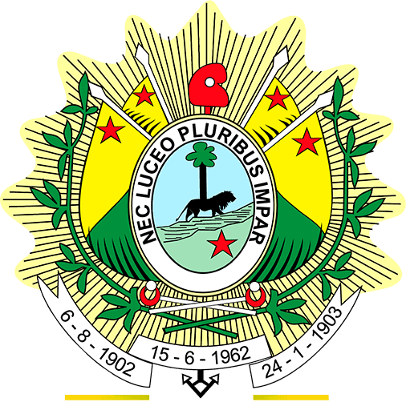

<!-- <a class="skip-link" [routerLink]="[currentUrl]" [fragment]="'main'" aria-label="Pular para o conteúdo principal">
  Pular para o conteúdo principal
</a> -->

<nz-layout class="layout-content">
    <nz-header class="header1" *ngIf="!isLogged() && !isInovaThecRoute()">
        <!-- <div class="app-header"> -->
        <div class="">
            <header class="header">
                <div nz-row nzJustify="space-between" class="sidebar-logo" [class.collapsed]="isCollapsed">
                    <a nz-col>
                        
                        <h1><span>SEAGRI</span></h1>
                    </a>
                    <span nz-col class="trigger trigger-responsive"
                        (click)="isCollapsed = !isCollapsed; responsiveMenu()" nz-icon
                        [nzType]="isCollapsed ? 'menu-unfold' : 'menu-fold'"
                        alt="Ícone para esconder ou exibir o menu de navegação">
                    </span>
                </div>
                <!-- MENU CENTRALIZADO -->
                <div class="menu-center">
                    <ul nz-menu nzTheme="light" nzMode="horizontal" class="top-menu">
                        <!-- <li nz-menu-item routerLink="/schedules" aria-label="Calendário" *ngIf="showSchedules">
                            <span nz-icon nzType="calendar"></span>
                            <span>Calendário</span>
                        </li> -->
                        <li nz-menu-item routerLink="/consult" aria-label="Consultar" *ngIf="showSchedules || showVehicles || showDrivers">
                            <span nz-icon nzType="search"></span>
                            <span>Consultar</span>
                        </li>
                        <li nz-menu-item routerLink="/calendar" aria-label="Calendário" *ngIf="showSchedules">
                            <span nz-icon nzType="calendar"></span>
                            <span>Calendário</span>
                        </li>
                        <li nz-menu-item routerLink="/schedules" aria-label="Agendamentos" *ngIf="showSchedules">
                            <span nz-icon nzType="schedule"></span>
                            <span>Agendamentos</span>
                        </li>
                        <li nz-menu-item routerLink="/driver" aria-label="Motoristas" *ngIf="showDrivers">
                            <span nz-icon nzType="team"></span>
                            <span>Motoristas</span>
                        </li>
                        <li nz-menu-item routerLink="/vehicle" aria-label="Veículos" *ngIf="showVehicles">
                            <span nz-icon nzType="car"></span>
                            <span>Veículos</span>
                        </li>
                        <li nz-menu-item routerLink="/registros" aria-label="Registros" *ngIf="showMaintenances || showSuppliers">
                            <span nz-icon nzType="folder"></span>
                            <span>Registros</span>
                        </li>
                        <li nz-menu-item routerLink="/reports" aria-label="Relatórios" *ngIf="showReports">
                            <span nz-icon nzType="solution"></span>
                            <span>Relatórios</span>
                        </li>
                        <li nz-submenu nzTitle="Configurações" nzIcon="setting" *ngIf=" showVehTypes || showBrands || showModels || showGroups">
                            <ul *ngIf="!isLoading">
                                <ng-container *ngIf="showFuels">
                                    <li nz-menu-item routerLink="/admin/fuel"><span nz-icon
                                            nzType="line"></span><span>Combustível</span></li>
                                </ng-container>
                                <li nz-menu-item routerLink="/vehicle-type" *ngIf="showVehTypes"><span nz-icon
                                        nzType="line"></span><span>Tipos de veículos</span></li>
                                <li nz-menu-item routerLink="/brand" *ngIf="showBrands"><span nz-icon
                                        nzType="line"></span><span>Marcas</span></li>
                                <li nz-menu-item routerLink="/models" *ngIf="showModels"><span nz-icon
                                        nzType="line"></span><span>Modelos</span></li>
                                <li nz-menu-item routerLink="/admin/permissions" *ngIf="showGroups"><span nz-icon
                                        nzType="line"></span><span>Permissões</span></li>
                            </ul>
                            <a *ngIf="isLoading">Carregando...</a>
                        </li>
                    </ul>
                </div>


                <div class="profile">
                    <a (click)="open_drawer()" aria-label="Perfil do usuário">
                        <span style="color: #19874a" class="username">{{user.userName}}</span>
                        <nz-badge>
                            <nz-avatar nzIcon="user" style="background-color: #19874a"></nz-avatar>
                        </nz-badge>
                    </a>

                    <nz-drawer [nzClosable]="false" [nzVisible]="visible" nzPlacement="right" (nzOnClose)="close_drawer()"
                        [nzWidth]="screenWidth < 768 ? '100%' : '30%'">
                        <ng-container *nzDrawerContent nzCloseOnNavigation nzKeyboard>
                            <nz-row>
                                <nz-col>{{user.userName}}</nz-col>
                                <nz-col><span nz-icon nzType="user" nzTheme="outline"></span></nz-col>
                            </nz-row>
                            <ul nz-menu>
                                <li nz-menu-group>
                                    <ul>
                                        <li nz-menu-item (click)="goToItem(user); close_drawer()">Visualizar perfil</li>
                                        <li *ngIf="showUsers" nz-menu-item routerLink="user">Listagem de usuários</li>
                                        <li nz-menu-item (click)="logout()">Sair</li>
                                    </ul>
                                </li>
                            </ul>
                        </ng-container>
                    </nz-drawer>
                </div>

            </header>
        </div>
    </nz-header>

    <nz-content class="overflow-scrollable" [class.app-immersive-inova-thec]="isInovaThecRoute()">
        <div class="inner-content">
            <app-alert></app-alert>
            <!-- Loader global cobria o INOVA THEC (z-index 99) e parecia “tela vazia” -->
            <app-loader *ngIf="!isInovaThecRoute()"></app-loader>
            <button *ngIf="showBackButton" class="milestone-back-btn" nz-button nzType="default" nzShape="round" (click)="goBack()"
                style="margin-bottom: 1rem;">
                <span nz-icon nzType="arrow-left"></span>
                Voltar
            </button>
            <router-outlet></router-outlet>
        </div>
    </nz-content>
</nz-layout>
